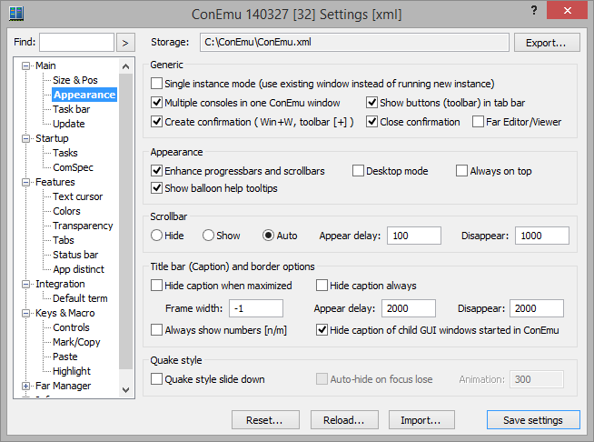

Settings: Appearance

Generic
Single instance mode (use existing window instead of running new instance) Use one ConEmu window when starting new console from shortcut or somewhere May be disabled by ‘/nosingle’ or forced by ‘/single’ switches
Multiple consoles in one ConEmu window Turn on MultiConsole (several consoles in one ConEmu) ConEmu restart required
Show buttons (toolbar) in tab bar
Create confirmation ( Win+W, toolbar [+] ) Confirm new console creation. You may change cmd line for it, or turn on "Run as..." feature. Even if unchecked, You may hold "Shift" to display dialog.
Close confirmation Show confirmation before closing tabs or ConEmu window
Far Editor/Viewer
Appearance
Enhance progressbars and scrollbars Enhance appearance of progressbars and scrollbars
Desktop mode Act as a part of Windows Desktop
Always on top Places the ConEmu window above all non-topmost windows. The window maintains its topmost position even when it is deactivated
Show balloon help tooltips Don't like tooltips in settings dialog? Disable this feature.
Scrollbar
- Hide Don't show scrollbar
- Show Always show scrollbar on the right edge of window
- Auto Show scrollbar on mousehover or scroll position change
Appear delay Scrollbar appear delay when ‘Always show scrollbar’ is off or in 3rd-state
Disappear Scrollbar disappear delay when ‘Always show scrollbar’ is off or in 3rd-state
Title bar (Caption) and border options
Hide caption when maximized Hide main window caption, when maximized (Alt-F9)
Hide caption always Remove window border and caption. Only console, tabs and status bar will be shown.
Show tabs in caption
Frame width While caption and frame are hidden, ConEmu may keep small part of frame (in pixels) around console part. Default is 1 pixel.
Appear delay Delay in milliseconds, for a Frame appearance
Disappear Delay in milliseconds, for a Frame disappearance
Always show numbers [n/m] Show [ActiveCon/TotalCon] in window caption
Hide caption of child GUI windows started in ConEmu
Quake style
Quake style slide down Slide console window from the top of the screen like gaming consoles Choose desired hotkey for ‘Minimize/Restore’ action on ‘Keys & Macro’ page
Auto-hide on focus lose
Animation Duration of Quake slide down/up (0..2000ms)